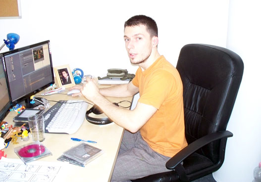

Resources
Winners
JOEL MURPHY
How did you get into animation? Was it your goal as soon as you began to draw, or did the enthusiasm for animation come later?According to a family story, my first movie experience is connected to 101 Dalmatians. I have been drawing ever since my childhood. But although I completed my studies at secondary school in graphics, it never occurred to me to be a cartoon animator. I was already devoted to films at that time, and thought perhaps I should move in this direction. I can thank a small matter that I'm in the wonderful world of animation today: Back in my hometown, Szeged, my mother noticed a small ad in the daily newspaper about an upcoming animation course at the nearby cartoon studio in Kecskemét (Kecskemétfilm). After a previous winnowing, there was an entrance exam that I passed. The course lasted for a couple of months, and during this period did I start to pay attention to animated films more seriously
Hahah! :) I love toys! I cannot deny, when a new animated film is at the cinema, I'm always there in those fast food restaurants, standing in the queue of children, trying to get hold of the toys they offer with the children's menu. Just one more thing, on my first trip abroad I took the fluorescent eyed Mike Wazowski with me. The toys won't let me diverge from my childhood and ease everyday life.
